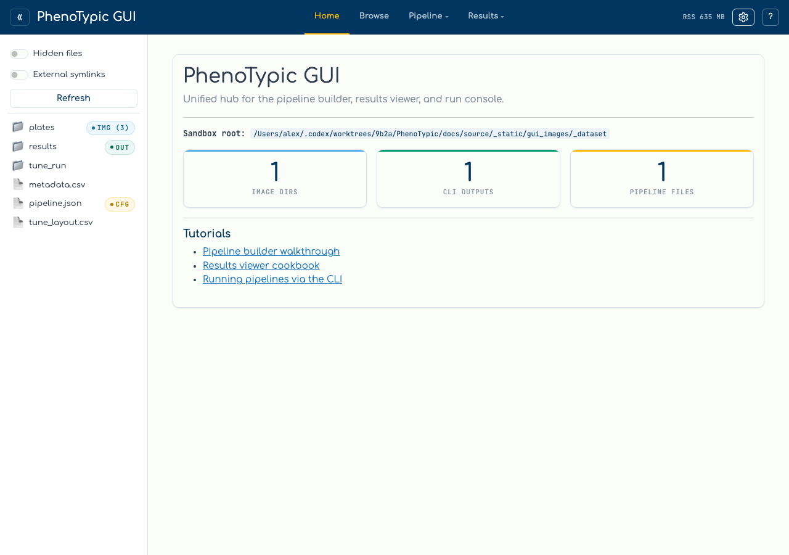
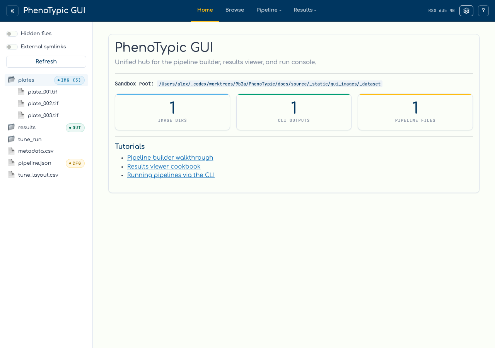
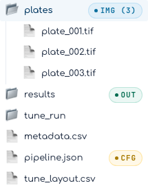

File Explorer#
The sidebar on the left of every page is a sandbox-scoped file browser. It classifies each entry on the fly so you can see at a glance which folder is an image directory, which JSON files are PhenoTypic pipelines, and which output folders carry a finished CLI run.
Initial state#
When the hub boots, the sidebar lists the immediate children of the
--root you passed. Folders are collapsed by default — the file browser is
lazy: clicking a folder fetches and renders one level of children at a
time.

The sidebar header carries three controls:
Control |
Effect |
|---|---|
|
Show entries whose names start with |
|
Show symlinks whose targets fall outside the sandbox root. Off by default — symlinks-to-elsewhere are a security hazard for the GUI’s path-resolution. |
|
Flush the classifier’s LRU cache. Use this after dropping new files into a directory or moving a CLI output around. |
Capability badges#
Every entry is run through a small classifier (phenotypic.gui.shell._classifier)
that emits one or more capability tags:
Badge |
Meaning |
|---|---|
|
Directory contains image files. The number in parens is a count, capped at |
|
File is a PhenoTypic pipeline JSON (detected by the |
|
Directory is a CLI output root: contains both |
|
Directory could not be listed due to a permission error. |

Click the plates row to expand it. The three TIFFs from the previous step
appear as children, and the parent folder swaps its closed-folder icon (📁)
for the open one (📂). A second click collapses the folder again.
Hand-off to the run console#
Clicking a sidebar entry doesn’t just expand it — the path is also stamped
into a shared selection store. The Run console reads that store and offers
context-appropriate Set as pipeline / Set as input dir / Set as output dir buttons in its hand-off banner. You’ll use that flow on the
Run Locally page.

Next: Build a Pipeline.